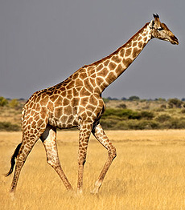

Жираф

Обитает в саваннах Африки. Сегодня их можно встретить только к югу и юго—востоку от Сахары, прежде всего в степях Восточной и Южной Африки.
Самцы жирафа достигают высоты до 5,5—6,1 м и весят до 900—1200 кг. Самки, как правило, немного меньше и легче. Шея у жирафов необычайно длинная, и это несмотря на то, что у них, как и у почти всех других млекопитающих, лишь семь шейных позвонков. Высокий рост увеличивает нагрузку на систему кровообращения, особенно в отношении снабжения мозга. Поэтому сердце у жирафов особенно сильное. Оно пропускает 60 л крови в минуту, весит 12 кг и создает давление, которое в три раза выше, чем у человека. Тем не менее, оно не смогло бы вынести перегрузки при резком опускании и поднятии головы жирафа. Для того, чтобы такие движения не вызвали смерть животного, кровь жирафа более густая и имеет вдвое более высокую плотность кровяных телец, чем у человека. Помимо этого, у жирафа имеются особые запирающие клапаны в большой шейной вене, прерывающие поток крови таким образом, что сохраняется давление в главной артерии, снабжающей мозг. Темный язык жирафа очень длинный и мускулистый: жираф может высовывать его на 45 см и способен хватать им ветки.
Рисунок на шерсти состоит из темных пятен, выделяющихся от более светлого оттенка базовой окраски, и у каждого жирафа индивидуален, как у человека отпечатки пальцев. Нижняя часть тела у жирафа более светлая и без пятен. На голове у жирафов обоих полов находятся два обтянутых шерстью рожка, утолщенные на концах. Изредка встречаются и две пары рожков. Посреди лба нередко имеется своеобразный костный нарост, который по ошибке можно принять за еще один непарный рог. Черные глаза окаймлены густыми ресницами, уши короткие. Жирафы обладают весьма хорошим зрением, слухом и обонянием, что позволяет им заблаговременно замечать опасность. Хорошему обзору местности способствует, конечно же, и большой рост. Своих высоких сородичей жирафы могут видеть на расстоянии до километра.
Жирафы умеют быстро бегать и в случае острой необходимости достигают галопом скорости 55 км/ч, то есть на коротких дистанциях они могут перегнать скаковую лошадь. Однако, как правило, они ходят не спеша, передвигая одновременно оба правых копыта, затем оба левых. Из-за своего большого веса и тонких ног жирафы могут ходить только по твердой поверхности. Болотистых пространств эти животные избегают, а реки часто становятся для жирафов непреодолимой преградой. Примечательно и то, что эти на первый взгляд громоздкие и неповоротливые животные умеют и прыгать, преодолевая даже барьеры высотой 1,85 м.
Жирафы являются исключительно травоядными животными. Строение тела и физиология позволяют жирафам питаться листвой древесных крон — на высоте, где у них нет конкурентов. Из деревьев жирафы предпочитают акацию. Жираф охватывает ветвь своим длинным языком, тянет ее ко рту и общипывает листья, оттягивая голову назад. Язык и губы построены таким образом, что не повреждаются, несмотря на колючие сучья. Ежедневно жираф потребляет около 30 кг пищи и проводит за едой от шестнадцати до двадцати часов в сутки.
Брачный период обычно длится с июля по сентябрь, а продолжительность беременности составляет 14—15 месяцев. Как правило, рождается только один детеныш.